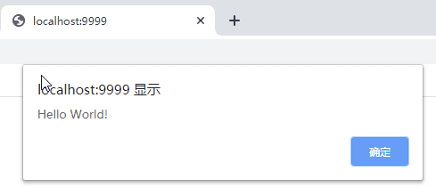
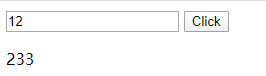
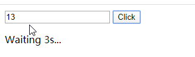

datetime:2022/1/16 16:00
author:nzb
Go WebAssembly (Wasm) 简明教程
1 WebAssembly 简介
WebAssembly是一种新的编码方式，可以在现代的网络浏览器中运行 － 它是一种低级的类汇编语言，具有紧凑的二进制格式，可以接近原生的性能运行，并为诸如C / C ++等语言提供一个编译目标，以便它们可以在Web上运行。它也被设计为可以与JavaScript共存，允许两者一起工作。 —— MDN web docs - mozilla.org
从 MDN 的介绍中，我们可以得出几个结论：
- WebAssembly 是一种二进制编码格式，而不是一门新的语言。
- WebAssembly 不是为了取代 JavaScript，而是一种补充（至少现阶段是这样），结合 WebAssembly 的性能优势，很大可能集中在对性能要求高（例如游戏，AI），或是对交互体验要求高（例如移动端）的场景。
- C/C++ 等语言可以编译 WebAssembly 的目标文件，也就是说，其他语言可以通过编译器支持，而写出能够在浏览器前端运行的代码。
Go 语言在 1.11 版本(2018年8月) 加入了对 WebAssembly (Wasm) 的原生支持，使用 Go 语言开发 WebAssembly 相关的应用变得更加地简单。Go 语言的内建支持是 Go 语言进军前端的一个重要的里程碑。在这之前，如果想使用 Go 语言开发前端，需要使用 GopherJS，GopherJS 是一个编译器，可以将 Go 语言转换成可以在浏览器中运行的 JavaScript 代码。新版本的 Go 则直接将 Go 代码编译为 wasm 二进制文件，而不再需要转为 JavaScript 代码。更巧的是，实现 GopherJS 和在 Go 语言中内建支持 WebAssembly 的是同一拨人。
Go 语言实现的函数可以直接导出供 JavaScript 代码调用，同时，Go 语言内置了 syscall/js 包，可以在 Go 语言中直接调用 JavaScript 函数，包括对 DOM 树的操作。
2 Hello World
接下来，我们使用 Go 语言实现一个最简单的程序，在网页上弹出 Hello World。
第一步，新建文件 main.go，使用 js.Global().get(‘alert’) 获取全局的 alert 对象，通过 Invoke 方法调用。等价于在 js 中调用 window.alert("Hello World")。
// main.go
package main
import "syscall/js"
func main() {
alert := js.Global().Get("alert")
alert.Invoke("Hello World!")
}
第二步，将 main.go 编译为 static/main.wasm
如果启用了
GO MODULES，则需要使用 go mod init 初始化模块，或设置 GO111MODULE=auto。$ GOOS=js GOARCH=wasm go build -o static/main.wasm第三步，拷贝 wasm_exec.js (JavaScript 支持文件，加载 wasm 文件时需要) 到 static 文件夹
$ cp "$(go env GOROOT)/misc/wasm/wasm_exec.js" static第四步，创建 index.html，引用 static/main.wasm 和 static/wasm_exec.js。 ```text
</html>
第五步，使用 goexec 启动 Web 服务
> 如果没有安装 goexec，可用 `go get -u github.com/shurcooL/goexec` 安装，需要将 $GOBIN 或 $GOPATH/bin 加入环境变量
当前的目录结构如下：
```text
demo/
|--static/
|--wasm_exec.js
|--main.wasm
|--main.go
|--index.html
$ goexec 'http.ListenAndServe(`:9999`, http.FileServer(http.Dir(`.`)))'
浏览器访问 localhost:9999，则会有一个弹出窗口，上面写着 Hello World!。

为了避免每次编译都需要输入繁琐的命令，可将这个过程写在 Makefile 中
all: static/main.wasm static/wasm_exec.js
goexec 'http.ListenAndServe(`:9999`, http.FileServer(http.Dir(`.`)))'
static/wasm_exec.js:
cp "$(shell go env GOROOT)/misc/wasm/wasm_exec.js" static
static/main.wasm : main.go
GO111MODULE=auto GOOS=js GOARCH=wasm go build -o static/main.wasm .
这样一个敲一下 make 就够了
3 注册函数(Register Functions)
在 Go 语言中调用 JavaScript 函数是一方面，另一方面，如果仅仅是使用 WebAssembly 替代性能要求高的模块，那么就需要注册函数，以便其他 JavaScript 代码调用。
假设我们需要注册一个计算斐波那契数列的函数，可以这么实现。
// main.go
package main
import "syscall/js"
func fib(i int) int {
if i == 0 || i == 1 {
return 1
}
return fib(i-1) + fib(i-2)
}
func fibFunc(this js.Value, args []js.Value) interface{} {
return js.ValueOf(fib(args[0].Int()))
}
func main() {
done := make(chan int, 0)
js.Global().Set("fibFunc", js.FuncOf(fibFunc))
<-done
}
- fib 是一个普通的 Go 函数，通过递归计算第 i 个斐波那契数，接收一个 int 入参，返回值也是 int。
- 定义了 fibFunc 函数，为 fib 函数套了一个壳，从 args[0] 获取入参，计算结果用 js.ValueOf 包装，并返回。
- 使用 js.Global().Set() 方法，将注册函数 fibFunc 到全局，以便在浏览器中能够调用。
js.Value 可以将 Js 的值转换为 Go 的值，比如 args[0].Int()，则是转换为 Go 语言中的整型。js.ValueOf，则用来将 Go 的值，转换为 Js 的值。另外，注册函数的时候，使用 js.FuncOf 将函数转换为 Func 类型，只有 Func 类型的函数，才能在 JavaScript 中调用。可以认为这是 Go 与 JavaScript 之间的接口/约定。
js.Func() 接受一个函数类型作为其参数，该函数的定义必须是：
func(this Value, args []Value) interface{}
// this 即 JavaScript 中的 this
// args 是在 JavaScript 中调用该函数的参数列表。
// 返回值需用 js.ValueOf 映射成 JavaScript 的值
在 main 函数中，创建了信道(chan) done，阻塞主协程(goroutine)。fibFunc 如果在 JavaScript 中被调用，会开启一个新的子协程执行。
A wrapped function triggered during a call from Go to JavaScript gets executed on the same goroutine. A wrapped function triggered by JavaScript’s event loop gets executed on an extra goroutine. —— FuncOf - golang.org
接下来，修改之前的 index.html，在其中添加一个输入框(num)，一个按钮(btn) 和一个文本框(ans，用来显示计算结果)，并给按钮添加了一个点击事件，调用 fibFunc，并将计算结果显示在文本框(ans)中。
<html>
...
<body>
<input id="num" type="number" />
<button id="btn" onclick="ans.innerHTML=fibFunc(num.value * 1)">Click</button>
<p id="ans">1</p>
</body>
</html>
使用之前的命令重新编译 main.go，并在 9999 端口启动 Web 服务，如果我们已经将命令写在 Makefile 中了，只需要运行 make 即可。
接下来访问 localhost:9999，可以看到如下效果。输入一个数字，点击Click，计算结果显示在输入框下方。

4 操作 DOM
在上一个例子中，仅仅是注册了全局函数 fibFunc，事件注册，调用，对 DOM 元素的操作都是在 HTML 中通过原生的 JavaScript 函数实现的。这些事情，能不能全部在 Go 语言中完成呢？答案可以。
首先修改 index.html，删除事件注册部分和 对 DOM 元素的操作部分。
<html>
...
<body>
<input id="num" type="number" />
<button id="btn">Click</button>
<p id="ans">1</p>
</body>
</html>
修改 main.go：
package main
import (
"strconv"
"syscall/js"
)
func fib(i int) int {
if i == 0 || i == 1 {
return 1
}
return fib(i-1) + fib(i-2)
}
var (
document = js.Global().Get("document")
numEle = document.Call("getElementById", "num")
ansEle = document.Call("getElementById", "ans")
btnEle = js.Global().Get("btn")
)
func fibFunc(this js.Value, args []js.Value) interface{} {
v := numEle.Get("value")
if num, err := strconv.Atoi(v.String()); err == nil {
ansEle.Set("innerHTML", js.ValueOf(fib(num)))
}
return nil
}
func main() {
done := make(chan int, 0)
btnEle.Call("addEventListener", "click", js.FuncOf(fibFunc))
<-done
}
- 通过
js.Global().Get("btn")或document.Call("getElementById", "num")两种方式获取到 DOM 元素。 - btnEle 调用
addEventListener为 btn 绑定点击事件 fibFunc。 - 在 fibFunc 中使用
numEle.Get("value")获取到 numEle 的值（字符串），转为整型并调用 fib 计算出结果。 - ansEle 调用
Set("innerHTML", ...)渲染计算结果。
重新编译 main.go，访问 localhost:9999，效果与之前是一致的。
5 回调函数(Callback Functions)
在 JavaScript 中，异步+回调是非常常见的，比如请求一个 Restful API，注册一个回调函数，待数据获取到，再执行回调函数的逻辑，这个期间程序可以继续做其他的事情。Go 语言可以通过协程实现异步。
假设 fib 的计算非常耗时，那么可以启动注册一个回调函数，待 fib 计算完成后，再把计算结果显示出来。
我们先修改 main.go，使得 fibFunc 支持传入回调函数。
package main
import (
"syscall/js"
"time"
)
func fib(i int) int {
if i == 0 || i == 1 {
return 1
}
return fib(i-1) + fib(i-2)
}
func fibFunc(this js.Value, args []js.Value) interface{} {
callback := args[len(args)-1]
go func() {
time.Sleep(3 * time.Second)
v := fib(args[0].Int())
callback.Invoke(v)
}()
js.Global().Get("ans").Set("innerHTML", "Waiting 3s...")
return nil
}
func main() {
done := make(chan int, 0)
js.Global().Set("fibFunc", js.FuncOf(fibFunc))
<-done
}
- 假设调用 fibFunc 时，回调函数作为最后一个参数，那么通过 args[len(args)-1] 便可以获取到该函数。这与其他类型参数的传递并无区别。
- 使用
go func()启动子协程，调用 fib 计算结果，计算结束后，调用回调函数callback，并将计算结果传递给回调函数，使用 time.Sleep() 模拟 3s 的耗时操作。 - 计算结果出来前，先在界面上显示
Waiting 3s...
接下来我们修改 index.html，为按钮添加点击事件，调用 fibFunc
<html>
...
<body>
<input id="num" type="number" />
<button id="btn" onclick="fibFunc(num.value * 1, (v)=> ans.innerHTML=v)">Click</button>
<p id="ans"></p>
</body>
</html>
- 为 btn 注册了点击事件，第一个参数是待计算的数字，从 num 输入框获取。
- 第二个参数是一个回调函数，将参数 v 显示在 ans 文本框中。
接下来，重新编译 main.go，访问 localhost:9999，随便输入一个数字，点击 Click。页面会先显示 Waiting 3s...，3s过后显示计算结果。

6 进一步的尝试
6.1 工具框架
- WebAssembly 的二进制分析工具 WebAssembly Code Explorer
- 使用NodeJs 或浏览器测试 Go Wasm 代码 Github Wiki
- 借鉴 Vue 实现的 Golang WebAssembly 前端框架 Vugu，完全使用 Go，不用写任何的 JavaScript 代码。
6.2 Demo/项目
- 使用 Go Assembly 前端渲染的一些例子
- jsgo 这个项目汇聚一些小而精的项目，包括 2048，俄罗斯方块等游戏，还有证明 Go 可以完整开发前端项目的 TodoMVC
6.3 相关文档
- syscall/js 官方文档 - golang.org
- Go WebAssembly 官方文档 - github.com